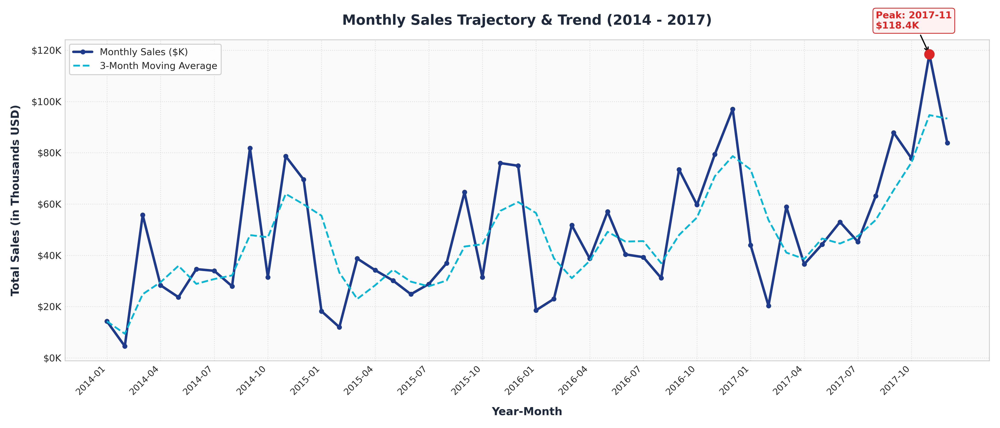
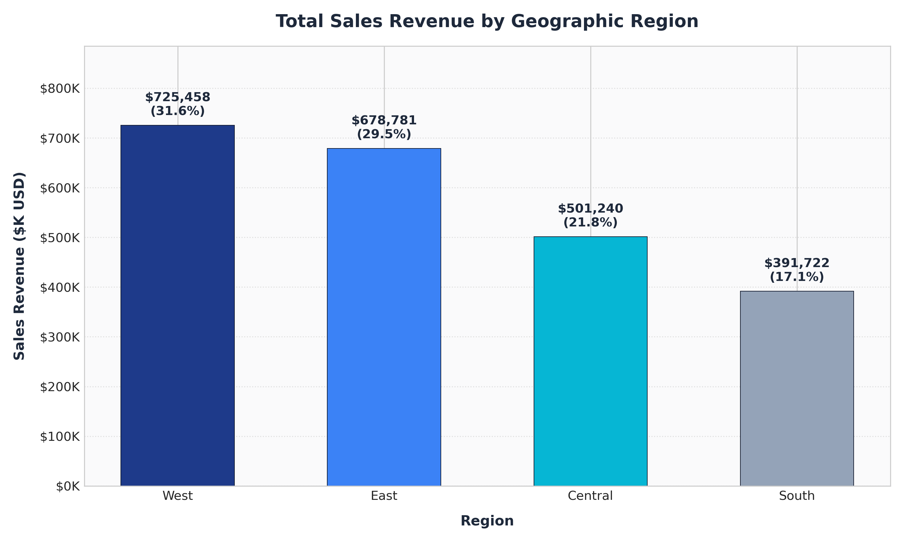
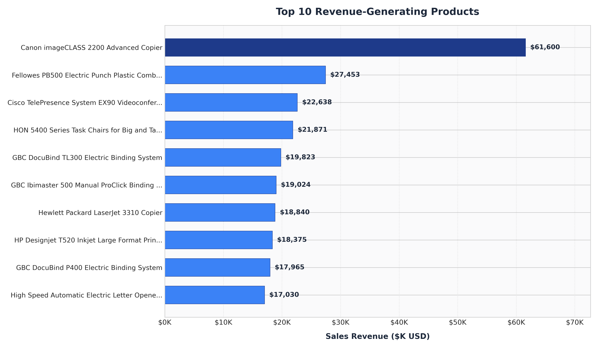
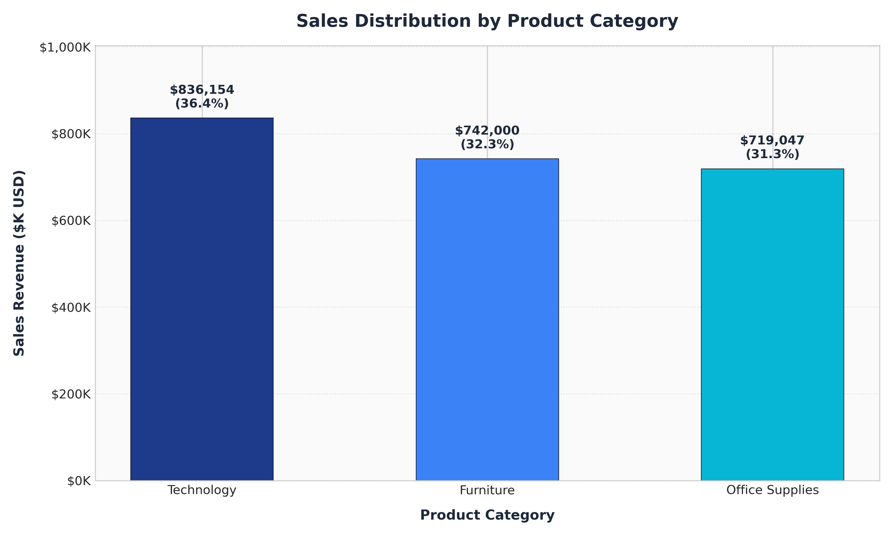
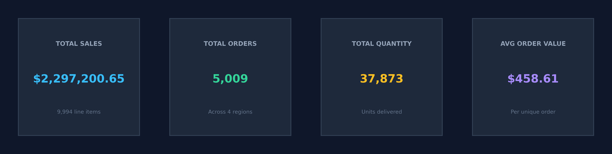

Dataset: 9,994 Actual Verified Records • Status: Complete & Presentation-Ready

Monthly Sales Trend & Trajectory

Regional Sales Breakdown

Top 10 Best-Selling Products

Sales Distribution by Category
